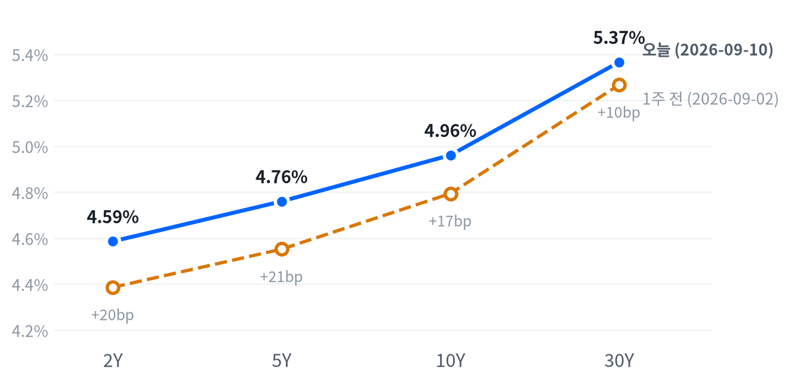

US MARKET BRIEF
유가 급등·단기금리 상승, 주식과 금도 동반 약세
미국 2026년 9월 10일 거래일 · 한국 9월 11일 발행. 가격은 일간 종가, 장중 경로는 30분 봉 기준.
전략 코멘트
유가가 급등하고 미국 국채금리가 모든 만기에서 올랐다. 주식은 하락했고 금도 손실을 냈다. 생산자물가의 비용 압력이 확인된 가운데 금리 상승이 짧은 만기에 더 집중됐다는 점이 오늘의 핵심이다.
원유 공급 위험과 물가 부담이 함께 부각되면 주식과 채권이 동시에 흔들릴 수 있다. 오늘은 금까지 내리면서 안전자산이라는 이름만으로 완충 효과를 기대하기 어려웠다. 다만 금리 상승분을 모두 연준 인상 기대라고 계산할 수는 없다.
기존 등급을 유지한다. 2~6주 모형 판단은 주식 중립, 채권 만기 축소, 달러 소폭 숏이다. 에너지·금의 소폭확대와 메모리·AI 인프라의 상대비중 확대도 유지하되, 각 자산의 기존 변경 조건을 계속 확인한다.
단기금리와 달러가 함께 오르는 흐름이 지속되면 기존 달러 약세와 금 우호 논리는 약해진다. 유가 상승이 진정돼도 금리가 계속 오르면 공급 충격만으로 설명한 해석을 고쳐야 한다. 다음 물가 발표와 만기별 금리 반응을 나눠 확인한다.
오늘의 장
미국장의 하락은 유럽 약세와 방향이 같았지만 아시아의 보합 흐름과는 달랐다. 해외 지수는 수집된 9월 9일 종가이므로 오늘 미국장과 동시 반응으로 읽지 않는다. 아시아에서는 상해가 오르고 닛케이·항셍은 소폭 내려 지역 내부에서도 방향이 갈렸다.
| 지수 | 종가 | 등락 | 기준일 |
|---|---|---|---|
| 닛케이 | 65,142.78 | -0.19% | 2026-09-09 |
| 항셍 | 25,274.96 | -0.17% | 2026-09-09 |
| 상해종합 | 3,951.51 | +0.28% | 2026-09-09 |
| DAX | 25,576.45 | -1.66% | 2026-09-09 |
| FTSE100 | 10,670.10 | -1.31% | 2026-09-09 |
| 유로스톡스50 | 6,311.56 | -1.58% | 2026-09-09 |
| VIX | 17.84 | +8.38% | 2026-09-10 |
개장 전부터 주가지수 선물은 약해졌다. S&P 선물은 02:30 ET 고점 이후 09:00 ET 저점으로 내려왔고 나스닥 선물도 새벽 고점보다 낮아졌다. 현물은 S&P가 -0.55%, 나스닥이 -0.91% 갭으로 출발했다.
S&P는 10:00 ET에 저점을 만든 뒤 오전에 반등했지만 상승분을 끝까지 지키지 못했다. 나스닥은 개장 무렵 저점에서 오후까지 회복한 뒤 일부 되돌렸다. 러셀은 오후 늦게 저점을 형성해 대형주와 달리 회복력이 약했다.
생산자물가와 실업수당은 개장 전에 나온 자료다. 물가 부담과 유가 상승은 금리와 주식에 동시에 부담을 줄 수 있지만, 종가만으로 각각의 영향을 분리할 수는 없다. 국채의 장중 자료가 없으므로 발표 직후 특정 만기가 얼마나 뛰었다는 설명은 하지 않는다.
이날 대형 지수는 하루 범위의 중간에서 마쳤고 소형주는 저점권에 남았다. 모두 하락했다는 결과 아래 서로 다른 경로가 있었다. 개장 때 이미 반영한 악재와 장중 새로 누적된 매도 압력을 구분하려면 종가 등락률만으로는 부족하다.
변동성 지수는 상승했으나 최근 가격 분포의 한가운데 부근이다. 위험 부담이 커진 것은 사실이지만 역사적으로 극단적인 공포라고 부를 근거는 약하다. 변동성의 상승 방향과 현재 수준은 따로 읽어야 과도한 표현을 피할 수 있다.
전일과 달라진 것은 완충 자산의 조합이다. 원유는 더 크게 올랐지만 금은 내렸고 달러는 강해졌다. 유가 상승에 반응하는 모든 자산이 같은 방향으로 움직이지 않으므로, 지정학 위험이라는 한 문장으로 하루 전체를 설명하기 어렵다.
이번 보고서는 미국장 종료 뒤까지 거래된 선물과 현물 종가를 구분한다. 원유의 늦은 고점이 이미 끝난 주식시장의 매도를 일으켰다고 말할 수는 없다. 장중 설명은 실제 관측된 시간 순서를 따르고 최종 가격은 아래 일간 표에 남겼다.
AP의 당일 마감 보도는 이란 전쟁에 따른 원유 공급 차질과 물가 우려를 시장 배경으로 짚었다. 이는 당일 가격 조합을 설명하는 보도 맥락이며, 개별 매매의 동기나 금리 변화의 정확한 기여도를 확인한 자료는 아니다.
주식
S&P는 최근 504거래일 가운데 이보다 높았던 날이 29일뿐인 자리지만 50일 평균 아래로 내려왔다. 장기 분포에서는 여전히 높고 단기 추세는 약해졌다는 뜻이다. 나스닥과 러셀도 높은 가격대에서 조정 중이며, 하루 하락 폭 자체는 최근 변동에 비해 보통 범위다.
| 자산 | 종가 | 전일 대비 |
|---|---|---|
| Nasdaq | 26,081.72 | -0.65% |
| S&P 500 | 7,591.70 | -0.58% |
| Dow | 52,064.10 | -0.60% |
| Russell 2000 | 2,890.95 | -1.04% |
| S&P 500 Growth | 138.18 | -0.83% |
| S&P 500 Value | 233.25 | -0.32% |
성장·가치는 IVW·IVE ETF 가격이다. 나머지는 지수 포인트이며 가격 단위가 다르다.
성장 ETF는 가치 ETF보다 더 내렸고 기술주도 약했다. 전날 일부 반도체가 버텼던 흐름이 오늘은 이어지지 않았다. 미래 이익에 대한 기대가 큰 종목에는 금리 상승이 부담이 될 수 있지만, 주가 하락을 곧바로 실제 주문 감소의 증거로 볼 수는 없다.
S&P의 50일 평균 이탈은 아직 폭이 크지 않다. 반면 러셀은 단기와 중기 평균을 모두 밑돌아 반등 확인에 더 많은 시간이 필요하다. 이동평균은 가격의 상태를 요약하는 도구이지 하락의 원인이나 다음 날 방향을 보장하는 기준은 아니다.
| 자산 | 종가 | 전일 대비 |
|---|---|---|
| Communication Services | 111.50 | +0.60% |
| Consumer Staples | 83.09 | +0.05% |
| Financials | 56.87 | -0.33% |
| Consumer Discretionary | 111.96 | -0.44% |
| Health Care | 165.66 | -0.55% |
| Energy | 64.93 | -0.58% |
| Industrials | 170.55 | -0.72% |
| Real Estate | 43.05 | -0.83% |
| Utilities | 42.52 | -0.98% |
| Materials | 50.76 | -1.23% |
| Technology | 185.22 | -1.41% |
통신서비스와 필수소비재만 상승했고 기술주와 소재가 크게 밀렸다. 에너지는 원유 급등에도 하락해 원자재 가격과 관련 주식의 손익이 다를 수 있음을 보여줬다. 원유 가격이 기업 이익으로 이어지는 과정에는 생산량과 비용, 이미 반영된 기대가 함께 작용한다.
유틸리티와 부동산도 내렸다. 이익의 안정성이 상대적으로 높더라도 국채금리 상승이 배당의 매력을 낮출 수 있다.
경기 방어 업종이라는 분류가 금리 위험까지 없애주지는 않는다. 오늘은 주식 안에서 업종을 옮기는 것만으로 충격을 완전히 피하기 어려웠다.
소형주의 약세도 이어졌다. 높은 조달 비용이 오래 지속될수록 차입 부담이 큰 기업이 불리할 수 있다는 해석은 가능하다.
다만 이날 개별 기업의 자금조달 조건이 악화됐다는 증거와는 구분해야 한다. 상대 수익률은 우려의 위치를 보여주지만 원인까지 확정하지는 않는다.
| 지수 | 30분 봉 저점 | 저점 시각 ET | 고점 | 고점 시각 ET |
|---|---|---|---|---|
| S&P 500 | 7,580 | 10:00 | 7,613 | 11:30 |
| Nasdaq | 25,983 | 09:30 | 26,176 | 13:00 |
| Russell 2000 | 2,887 | 15:00 | 2,909 | 09:30 |
나스닥의 장중 반등은 전일 종가 회복과는 다르다. 낮게 출발한 뒤 개장가보다 높게 마쳐도 일간 수익률은 마이너스일 수 있다. 오늘은 개장 갭이 커서 장중 회복만 보고 매수세가 하루 전체를 지배했다고 설명하면 방향을 잘못 읽게 된다.
러셀은 개장 부근이 고점이었고 오후에 저점을 만들었다. 대형주가 낮은 가격에서 반등하는 동안 소형주에는 비슷한 회복이 부족했다. 따라서 오후 나스닥의 반등을 미국 주식 전반의 회복으로 넓히는 해석에는 주의가 필요하다.
기간별 업종 수익률을 보면 하루 등락과 누적 흐름은 다르다. 기술주는 오늘 하락해도 장기 성과가 남아 있고 통신서비스의 하루 상승이 장기 약세를 모두 되돌린 것은 아니다. 비교 기간을 고정해야 반등과 추세 전환을 혼동하지 않는다.
섹터 기간별 수익률
섹터 기간별 수익률
채권
중장기 국채금리는 최근 504거래일 분포의 가장 높은 쪽에 있고 하루 상승 폭도 이례적으로 컸다. 높은 이자 수익을 받을 기회와 기존 채권의 가격 손실이 함께 커진 자리다. 오늘은 짧은 만기의 금리가 더 올라 장기물만의 수급 문제로 하루를 설명하기 어렵다.
| 만기 | 9/10 금리 | 전일 변화 | 9/2 금리 | 주간 변화 |
|---|---|---|---|---|
| 2Y | 4.586% | +15.0bp | 4.386% | +20.0bp |
| 5Y | 4.760% | +13.8bp | 4.552% | +20.8bp |
| 10Y | 4.961% | +11.6bp | 4.794% | +16.7bp |
| 30Y | 5.366% | +7.1bp | 5.267% | +9.9bp |
출처: Naver Treasury. 모두 9월 10일 17:05 ET 미국 현금시장 종가, 주간 비교는 9월 2일. 1bp는 0.01%포인트다.
10년 금리가 11.6bp 올랐고 30년도 7.1bp 상승했다. 유가 급등과 생산자물가의 비용 압력이 물가 우려를 키울 수 있는 조합이다. 다만 일간 금리만으로 물가 뉴스와 국채 수급의 기여도를 정확히 나눌 수는 없으며, 같은 시각의 정책 가격 자료가 추가로 필요하다.
단기금리가 장기금리보다 더 올라 수익률곡선은 평평해졌다. 금리 상승을 뜻하는 베어와 곡선 평탄화를 합쳐 베어 플래트닝이라고 부르는 움직임이다. 장기채만 더 많이 팔렸다는 이야기와는 다르며, 어느 만기의 금리가 더 움직였는지부터 확인해야 한다.
주간으로도 같은 방향이다. 짧은 만기와 중간 만기 금리가 장기보다 더 올라 장단기 금리차가 줄었다. 하루 움직임이 주간 추세와 같은 쪽이라는 점은 확인되지만, 서로 다른 비교 기간의 변화폭을 한 원인으로 설명할 수는 없다.

주간 곡선은 전반적으로 상승하면서 2년·10년 및 5년·30년 사이의 기울기가 작아졌다.
채권 가격과 금리는 반대로 움직인다. 특히 긴 만기의 채권은 같은 금리 변화에도 가격 변동이 더 클 수 있으므로, 오늘 단기금리가 더 많이 올랐다고 단기채의 손실이 반드시 더 크다는 뜻은 아니다. 금리의 변화와 가격 민감도를 구분해야 실제 보유 위험을 읽을 수 있다.
명목금리에서 현재 정책금리를 뺀 값을 앞으로의 인상 폭으로 해석해서는 안 된다. 국채금리에는 미래 단기금리의 평균 기대와 기간·유동성에 대한 보상이 함께 들어간다. 정책 기대를 말하려면 해당 회의를 반영하는 선물이나 금리스왑 자료가 필요하다.
| 보조 지표 | 수준 | 기준일 |
|---|---|---|
| 10년 실질금리 | 2.46% | 2026-09-09 |
| 5년 기대인플레 | 2.46% | 2026-09-10 |
| 10년 기대인플레 | 2.40% | 2026-09-10 |
| 10년 기간프리미엄(장기 보유 추가 보상) | 0.89% | 2026-09-04 |
| 하이일드 스프레드 | 2.71% | 2026-09-09 |
| 투자등급 스프레드 | 0.81% | 2026-09-09 |
동일 날짜로 맞춘 전날의 금리 분해에서는 실질금리가 명목금리 상승을 설명했다. 그러나 그 관측은 오늘의 급등 원인을 확정하지 못한다. 오늘 발표된 기대인플레 자료와 전날 실질금리를 서로 빼면 시점이 섞이므로 오늘의 완전한 분해로 제시하지 않았다.
기대인플레는 명목채와 물가연동채의 가격 차이에서 읽는 물가 보상이다. 시장의 평균 물가 예상뿐 아니라 위험과 유동성에 대한 보상도 포함한다. 오늘 이 지표가 올랐다는 사실은 물가 부담과 맞지만, 가계의 물가 전망이 같은 폭으로 상승했다는 뜻은 아니다.
회사채 가산금리는 전날 관측이다. 투자등급 수치가 안정적이어도 오늘 정책 기대가 그대로였다고 말할 수는 없다. 국채금리와 신용 가산금리는 서로 다른 위험을 반영하므로, 기업 자금조달 여건을 점검할 때 두 경로를 따로 확인한다.
9월 9일 기준 5년 뒤 5년 명목금리는 5.05%다. 현재 곡선에서 환산한 미래 구간의 금리이며 연준의 확정 전망이 아니다. 현금시장 종가보다 하루 이른 보조 자료로 구분하고 오늘 급등의 결과로 사용하지 않는다.
FX
달러지수는 99.09로 최근 가격 분포의 중간 부근이다. 오늘 올랐지만 단기간의 누적 약세를 모두 되돌린 것은 아니다. 원·달러는 최근 가격 기록 가운데 이보다 낮았던 날이 엿새뿐인 낮은 자리여서 주요 통화 묶음과 원화의 가격 위치는 상당히 다르다.
| 자산 | 종가 | 전일 대비 |
|---|---|---|
| DXY | 99.09 | +0.32% |
| USD/KRW | 1,339.17 | -0.00% |
| USD/JPY | 153.57 | +0.06% |
| EUR/USD | 1.1634 | +0.06% |
DXY는 지수. 원·달러와 달러·엔은 달러당 원·엔, 유로·달러는 유로당 달러다.
달러지수 상승과 미국 금리 상승이 함께 나타났다. 상대적으로 높은 미국 금리가 달러를 지지할 수 있다는 해석과는 맞지만, 금리 차만으로 환율 전체를 설명할 수는 없다. 위험 회피와 다른 국가의 정책 기대도 영향을 주므로 각각의 기여도는 확인되지 않았다.
원·달러는 거의 움직이지 않았고 유로·달러는 소폭 상승했다. 달러지수가 올랐다는 사실을 모든 상대 통화의 달러 대비 약세로 바꾸면 안 된다. 서로 다른 구성 통화와 집계 시점이 있으므로 각 환율의 방향을 표에서 따로 확인한다.
달러·엔 장중 표본은 새벽 저점 이후 올라 미국 오후에 고점을 만들었다. 일간 표의 등락률보다 장중 경로가 더 크게 보이는 것은 집계 시각이 같지 않기 때문이다. 일간 종가와 마지막 장중 봉을 섞어 추가 수익률을 계산하지 않았다.
원화 투자자에게 환율은 해외자산 수익을 바꾸는 별도 요인이다. 달러 표시 자산이 하락한 날에도 원화 약세가 환산 손실을 줄일 수 있으나, 오늘 원화 일간 값은 거의 제자리다. 실제 계좌 성과는 매수 시점과 환헤지 여부에 따라 달라진다.
전일에는 금리 상승에도 달러가 약했지만 오늘은 함께 올랐다. 하루의 관계가 바뀌었다는 관측은 중요하나 장기 상관관계가 뒤집혔다는 뜻은 아니다. 다음 발표에서도 두 가격이 같은 방향으로 반응하는지 확인해야 일시적인 변동과 지속되는 조정을 나눌 수 있다.
달러 강세는 금처럼 달러로 표시되는 자산에 부담이 될 수 있다. 오늘 금 하락은 이런 경로와 맞지만 동시 움직임만으로 인과가 확정되지는 않는다. 금리와 달러를 각각 보면서 어떤 부담이 계속 남는지 확인하는 편이 설명에 도움이 된다.
원자재
WTI는 최근 504거래일 가운데 이보다 높았던 날이 아흐레뿐인 높은 가격대에 올라왔다. 오늘 상승 폭도 최근 통상적인 변동을 크게 웃돈다. 금은 같은 날 하락해 원유와 방향이 갈렸으며, 에너지 공급 위험과 금의 보유 비용을 하나의 이야기로 묶기 어려운 날이다.
| 자산 | 종가 | 전일 대비 |
|---|---|---|
| WTI | 103.78 | +8.05% |
| Brent | 108.85 | +7.55% |
| Natural Gas | 2.838 | +0.57% |
| Gold | 4,359.70 | -1.27% |
선물 일간 수집값. 원유는 달러/배럴, 천연가스는 달러/MMBtu, 금은 달러/트로이온스. 기사 결제가격과 집계 시점이 다를 수 있다.
WTI는 8.05% 급등해 이번 보고서의 주요 자산 중 가장 두드러졌다. 공급 불안이 가격에 반영되는 상황에서는 수요가 늘지 않아도 원유가 오를 수 있다. 당일 공급 뉴스는 아래 출처와 함께 구분하며, 가격 상승만으로 실제 생산 중단 규모를 역산하지 않는다.
장중 원유는 새벽 저점에서 크게 올라 미국 주식시장 종료 뒤에 고점을 만들었다. 종가 상승률은 최종 결과이고 어느 시점에 어떤 뉴스가 반영됐는지는 별도 문제다. 특히 장 종료 뒤의 고점을 이미 끝난 주식 매도의 직접 원인으로 사용하지 않는다.
브렌트는 WTI보다 높은 가격에 거래됐다. 국제 해상 운송에 더 직접 노출되는 기준유라는 차이는 있지만 두 가격의 차이 전부를 당일 사건으로 설명할 근거는 없다. 계약과 거래 시점의 차이를 함께 두고 두 유종이 동반 급등했다는 관측에 집중한다.
원유 상승은 생산자에게 유리할 수 있지만 에너지 주식은 이날 하락했다. 주식에는 전체 시장의 금리 부담과 기업별 비용, 예상 이익이 동시에 반영된다. 따라서 원유를 보유하는 것과 에너지 기업의 주식을 보유하는 것은 같은 거래가 아니다.
높은 유가가 얼마나 오래 지속되는지가 다음 물가 경로에 중요하다. 운송비와 생산비가 오르면 기업은 마진 축소를 받아들이거나 가격을 소비자에게 넘길 수 있다. 실제 전가 정도는 판매가격과 소비 수요에서 확인해야 하며 하루 원유 급등만으로 근원물가 재가속을 확정하지 않는다.
천연가스는 소폭 올랐지만 원유처럼 급등하지 않았다. 두 시장은 저장과 운송 구조, 지역별 수급이 달라 같은 에너지라는 이름만으로 움직임이 일치하지 않는다. 확인되지 않은 날씨나 재고 변화를 이날 원인으로 덧붙이지 않았다.
금은 새벽 고점 이후 낮아져 미국 주식시장 종료 뒤에도 약한 가격을 보였다. 전일 금이 완충 역할을 했다고 오늘도 같은 결과를 내는 것은 아니다. 금리 상승과 달러 강세가 겹칠 때 금의 무이자 보유 비용이 부각될 수 있다는 가설을 다음 관측에서도 점검한다.
금과 원유의 엇갈림은 충격의 종류에 따라 자산 반응이 달라진다는 사례다. 공급 불안은 원유 자체의 희소성을 높이는 반면 금은 통화와 금리 변화도 반영한다. 안전자산이나 인플레이션 헤지라는 분류는 출발점일 뿐 당일 수익의 보장은 아니다.
매크로 논리
매크로 레짐, 즉 성장과 물가를 함께 본 국면은 연착륙을 유지한다. 오늘 새 발표를 반영해도 성장과 물가의 둔화 조합은 같다. 이 명칭은 경기침체가 없다고 보증하는 표현이 아니다.
성장 점수 -0.489 · 물가 점수 -0.381 | 고용 -0.005 · 활동 -0.615 · 소비 -0.847. 추세 방향은 단일 전월비와 다를 수 있다.
생산자물가
BLS 생산자물가 원문과 수집 통계를 함께 본다. 8월 최종수요 PPI는 전월비 0.40%로 이전 0.07%보다 높았다.
9월 4일 TD가 정리한 시장 예상과 일치한다. 전망 집계 시각에 따라 차이가 있어 예상 상회로 단정하지 않는다.
원문에서는 상품이 1.1% 올랐고 에너지는 4.2% 상승했다. 서비스는 0.1%로 상대적으로 완만했다. 식품·에너지·유통서비스를 제외한 지수는 0.3% 올라 비용 압력이 에너지에만 한정된 것은 아니다.
상품과 서비스의 차이를 보면 에너지 비용의 역할이 두드러진다. 다만 이 발표는 8월을 측정해 오늘 원유 급등의 결과를 포함하지 않는다. 운송과 다른 서비스까지 압력이 이어지는지 다음 발표에서 확인한다.
실업수당
DOL 실업수당 원문기준 신규 청구는 206000건으로 이전 207,000건보다 적었다. 4주 평균도 206,000건이다. 계속 청구는 1,774,000건으로 신규 청구와 기준 주간이 다르다.
신규 청구 감소는 해고가 급증하지 않았다는 관측이다. 그러나 재취업 여건이나 고용 전체의 가속을 확인하는 단일 지표는 아니다. 주간 변동을 낮춘 평균과 계속 청구를 함께 본다.
고용
| 지표 | 최근 | 이전 | 기준 기간 |
|---|---|---|---|
| JOLTS Job Openings | 7,271.00 K | 7,182.00 K | 2026-07-01 |
| Initial Jobless Claims | 206,000.00 | 207,000.00 | 2026-09-05 |
| Initial Claims 4-wk MA | 206,000.00 | 207,500.00 | 2026-09-05 |
| Continuing Jobless Claims | 1,774,000.00 | 1,775,000.00 | 2026-08-29 |
| Nonfarm Payrolls (chg) | 162.00 K | 21.00 K | 2026-08-01 |
| Unemployment Rate | 4.10 % | 4.10 % | 2026-08-01 |
| Avg Hourly Earnings MoM | 0.27 % | 0.16 % | 2026-08-01 |
활동
| 지표 | 최근 | 이전 | 기준 기간 |
|---|---|---|---|
| Industrial Production MoM | 0.20 % | 0.27 % | 2026-07-01 |
| Durable Goods Orders MoM | 1.08 % | 0.58 % | 2026-07-01 |
| New Home Sales | 607.00 K | 678.00 K | 2026-07-01 |
| Existing Home Sales | 3,980,000.00 | 4,060,000.00 | 2026-08-01 |
| Real GDP Growth QoQ (ann.) | 1.50 % | 2.10 % | 2026-04-01 |
소비
| 지표 | 최근 | 이전 | 기준 기간 |
|---|---|---|---|
| Retail Sales MoM | -0.58 % | 0.25 % | 2026-07-01 |
| Michigan Consumer Sentiment | 55.20 | 49.50 | 2026-07-01 |
물가
| 지표 | 최근 | 이전 | 기준 기간 |
|---|---|---|---|
| CPI YoY | 3.54 % | 3.73 % | 2026-07-01 |
| CPI MoM | 0.07 % | -0.42 % | 2026-07-01 |
| Core CPI YoY | 2.79 % | 2.81 % | 2026-07-01 |
| Core CPI MoM | 0.22 % | -0.02 % | 2026-07-01 |
| PPI Final Demand MoM | 0.40 % | 0.07 % | 2026-08-01 |
| PCE Price Index YoY | 3.70 % | 3.72 % | 2026-07-01 |
| Core PCE YoY | 3.34 % | 3.34 % | 2026-07-01 |
| Michigan 1-Yr Inflation Exp | 4.20 % | 4.60 % | 2026-07-01 |
FRED 정본. 날짜는 통계 기준 기간, K는 천 단위이며 주택 판매는 연율. GDP는 전기비 연율이다. 예상치는 발표 전 TD 자료를 본문에서 별도로 비교했다.
기존주택 판매도 감소해 활동의 약세가 남아 있다. PPI의 전월비 상승과 물가축의 둔화 표시는 서로 다른 비교 기간을 사용한다. 오늘 한 발표의 상승을 숨기지 않으면서 여러 지표의 누적 방향도 함께 유지한다.
정책은 인상 위험이 우위인 기존 경로를 유지한다. 66%는 이전 책에서 승계한 참고치이며 오늘 확인한 실시간 CME FedWatch 확률이 아니다. 국채금리 상승을 그 확률의 상승분으로 바꾸지 않으며, 새 시장 확률 확보 전에는 구체적인 재산정을 보류한다.
3~6개월 전달 경로는 유지한다. 성장 둔화와 물가 둔화가 상쇄돼 주식은 중립이며, 물가 부담이 잦아들면 채권·금에는 우호적이고 달러에는 불리한 경로다. 유가 공급 위험과 AI 설비 투자 기대는 그 과정에 맞서는 힘으로 남는다.
채권의 구조적 우호와 단기 만기 축소는 기간이 다른 판단이다. 향후 물가 둔화를 기대하더라도 지금의 금리 상승을 견디는 위험은 별도로 관리해야 한다. 다음 물가 발표에서 근원 압력이 낮아지고 정책 경로도 완화되면 단기 판단을 다시 검토한다.
TD의 9월 4일 전망 집계와 비교하면 PPI는 예상과 같고 신규 실업수당은 예상보다 적었다. 따라서 생산자물가의 전월비 상승을 예상 상회와 혼동하지 않는다. 청구 전주 값은 상향 수정됐으므로 최초 발표보다 수정된 비교값을 사용했다.
멀티에셋 매니저 전략
투자 기간은 2~6주이며 모든 기존 등급을 유지한다. 가격 하락은 위험을 점검할 이유지만 등급 변경과 같은 결정은 아니다. 사전에 정한 조건과 오늘 관측을 나란히 놓고 판단한다.
| 자산 | 등급 | 시작일 | 유지 일수 | 논거 | 다음 분기점 |
|---|---|---|---|---|---|
| 주식 | 중립 | 2026-09-01 | 8영업일 | S&P의 50일선 대비 -0.16%, VIX 17.84로 기존 변경 조건에 닿지 않았다. 중립을 유지한다. | 50일선 상회폭 3% 초과 또는 VIX 22 초과 |
| 채권 | 숏 바이어스 | 2026-08-14 | 20영업일 | 30년 5.366%, 주간 5년·30년 금리차 변화 -10.9bp다. 만기를 짧게 두는 판단을 유지한다. | 30년 5.4% 초과·5.05% 미만 또는 주간 5s30s +15bp 초과 |
| 달러 | 달러 소폭 숏 | 2026-08-14 | 20영업일 | DXY 20일 변화 -0.92%다. 당일 반등에도 달러 소폭 숏을 유지하되 지속 강세를 경계한다. | DXY 20일 -3% 미만 또는 101 초과 |
| 에너지 | 소폭확대 | 2026-09-01 | 8영업일 | WTI 5일 수익률 +14.06%다. 급등했지만 추가 확대 기준 아래여서 소폭확대를 유지한다. | WTI 5일 +20% 초과 또는 +3% 미만 |
| 귀금속 | 소폭확대 | 2026-09-01 | 8영업일 | 금 20일 -1.12%, 5일 -0.16%다. 기존 축소 조건 전까지 소폭확대를 유지한다. | 금 20일 +15% 초과, 5일 -8% 미만 또는 DXY 101 초과 |
| 메모리 | OW | 2026-09-04 | 5영업일 | 20일 초과수익 +4.35%포인트다. 오늘 동반 하락에도 상대비중 OW를 유지한다. | 20일 초과수익 0%포인트 미만 또는 판매단가 하락 확인 |
| AI 인프라 | OW | 2026-09-08 | 3영업일 | 5일 초과수익 +5.66%포인트다. 기존 OW를 유지하며 주문과 자금조달 변화를 확인한다. | 5일 초과수익 0%포인트 미만 또는 투자·발주 축소 확인 |
채권의 숏 바이어스는 만기 위험을 줄이는 뜻이며 벨리 OW는 중간 만기의 상대비중을 높이는 판단이다. 오늘 짧은 만기도 손실을 낼 수 있었으므로 만기 축소를 무손실 전략으로 설명하지 않는다. 금리 상승을 견딜 범위와 완화 확인 조건을 함께 둔다.
달러 약세와 금 우호 판단에는 오늘 가격이 반대로 움직였다. 그렇다고 하루 뒤에 등급을 바꿔 손실을 피했다고 기록하지 않는다. 기존 무효화 조건을 계속 관찰하며 가격과 논리가 어긋난 사실 자체를 복기에 남긴다.
메모리와 AI 인프라는 시장 대비 높은 비중을 뜻하는 OW를 유지한다. 절대 수익률이 마이너스여도 상대 성과 조건이 남을 수 있다. 다만 실제 발주 지연이나 판매단가 하락이 확인되면 가격 조건과 별도로 판단을 다시 열어야 한다.
주식 중립은 지금 시장의 모든 종목을 같은 비중으로 보유한다는 뜻은 아니다. 소형주의 약세와 기술주의 하락이 함께 나타났으므로 반등 여부를 구분해서 관찰한다. 지수의 상태가 회복되기 전에 낙폭이 크다는 이유만으로 비중을 늘리지 않는다는 것이 이 모형의 현재 판단이다.
에너지는 공급 위험에 대응하는 기존 비중을 유지한다. 같은 공급 뉴스를 근거로 날마다 비중을 추가하면 이미 반영된 위험을 중복해서 사는 결과가 될 수 있다. 통항과 생산의 정상화가 확인되면 높은 가격을 유지시킨 전제가 약해지는지부터 살핀다.
귀금속은 소폭확대를 유지하지만 금이 매일 손실을 막는다고 기대하지 않는다. 오늘처럼 달러와 금리가 동시에 오르면 금에도 부담이 생길 수 있다. 금 자체의 누적 수익과 달러 조건을 함께 보는 이유이며, 원유 수익이 좋았다고 금의 손실을 설명 없이 덮지 않는다.
메모리의 상대 성과에는 최근 강세가 아직 남아 있다. 그러나 그 조건은 주식 가격으로 계산한 결과이므로 실제 판매단가나 출하량이 좋아졌다는 증거와는 다르다. 기업 발표에서 수요가 확인되지 않으면 높은 상대 성과만으로 장기 투자 논리를 강화하지 않는다.
AI 인프라는 광통신과 전력 설비가 모두 밀린 날이라 바스켓 전체 위험을 다시 보게 된다. 다만 각 기업의 고객과 수주 시점이 다르므로 같은 하락률을 같은 사업 악화로 치환하지 않는다. 고객 투자 축소와 실제 발주 지연이 확인되는지 계속 살핀다.
등급 유지는 전망에 대한 확신이 높아졌다는 선언이 아니다. 관측이 기존 가설에 반하더라도 사전에 정한 변경 조건과 그 조건을 세운 이유를 함께 확인하는 과정이다. 다음 발표가 조건을 충족하면 기존 손익과 무관하게 판단을 바꾸고 변경 근거를 남긴다.
채권의 중간 만기 선호도 별도로 검증해야 한다. 오늘 중간 만기가 장기보다 더 크게 움직였으므로 현재 선택이 항상 우월하다는 설명은 맞지 않는다. 정책 경로와 만기별 수급 자료를 추가로 확인하면서 모의 운용 결과에 나타나는 비용을 숨기지 않는다.
모의 포트폴리오
2026년 8월 14일 설정한 모의 운용이다. 벤치마크는 모든 등급을 중립으로 놓고 같은 상품으로 구성한다. 실제 계좌의 수수료·세금·체결 오차를 반영한 성과가 아니며 원유 ETF는 현물과 다르게 움직일 수 있다.
비중 조정 한 칸의 위험 예산은 0.75%다. 최근 615거래일 가격을 기준으로 상품별 조정 폭을 다르게 잡았다. 중립 구성에서 주식 관련 위험 몫은 66.0%로, 상관관계까지 반영한 실제 손실 기여도가 아닌 설계 기준이다.
9월 9일 정한 등급을 적용했다. 오늘 판단은 다음 거래일 종가부터 반영하므로 당일 종가를 보고 그날 수익을 소급해 얻지 않는다.
설정 이후 수익률은 -1.049%, 중립 기준 대비 -0.229%포인트다. 기록에는 8월 28일 결측이 포함돼 있다. 짧고 일부 비어 있는 기록으로 장기 운용 능력을 판정하지 않는다.
| 기간 | 포트폴리오 | 중립 기준 | 차이 |
|---|---|---|---|
| 하루 | -0.644% | -0.604% | -0.040%p |
| 9월 2일~9월 10일 | +0.266% | +0.090% | +0.175%p |
| 설정 이후 | -1.049% | -0.820% | -0.229%p |
| 자산 | 비중 | 중립 대비 |
|---|---|---|
| 주식 코어 | 35.52% | -3.48%p |
| 메모리 | 5.07% | +1.57%p |
| AI 인프라 | 5.07% | +1.57%p |
| 채권 장기(20Y+) | 8.36% | -5.64%p |
| 채권 단기(1-3Y) | 19.68% | +5.68%p |
| 귀금속 | 9.64% | +3.14%p |
| 에너지(WTI) | 6.38% | +2.38%p |
| 달러 약세 | 7.27% | +7.27%p |
| 현금성 | 3.02% | -12.48%p |
에너지는 손실을 줄였지만 주식·채권·금의 하락을 모두 상쇄하지 못했다. 메모리와 AI 인프라의 확대 비중도 부담이 됐다. 전날 완충 효과를 냈던 구성이 오늘 기준보다 부진할 수 있다는 점을 그대로 기록한다.
주목 섹터·종목
오늘은 메모리와 AI 설비 관련주가 함께 내렸다. 원유 급등에도 에너지 주식이 약했다는 점까지 보면, 사업 수혜 기대와 주식 가격의 단기 성과를 분리할 필요가 있다. 다음 기업 발표에서는 주문·마진·투자 계획이 기존 기대를 뒷받침하는지 확인한다.
메모리·DRAM
| 자산 | 종가 | 전일 대비 |
|---|---|---|
| Micron | 977.41 | -4.90% |
| Western Digital | 460.93 | -4.43% |
| Seagate | 862.33 | -2.66% |
| Nvidia | 218.36 | -2.37% |
| Samsung Elec | 269,000.00 | -0.19% |
| SK hynix | 1,853,000.00 | -0.16% |
삼성전자·SK하이닉스는 먼저 마감한 9월 10일 한국장 원화 가격, 나머지는 미국장 달러 가격. 엔비디아는 수요 연관 비교 종목이다.
미국 메모리·저장장치 종목이 모두 하락했고 한국 두 종목도 소폭 내렸다. 미국의 더 큰 하락을 한국장 마감 뒤 뉴스와 혼동해서는 안 된다. 한국 가격은 미국 정규장의 매도에 대한 사후 반응이 아니다.
주가 약세가 당일 D램 판매단가 하락을 확인한 것은 아니다. 같은 테마 종목들이 함께 하락했다는 관측과 실제 제품 수요는 별도 자료로 확인한다. 확인되지 않은 감산이나 주문 취소를 원인으로 붙이지 않는다.
AI 인프라
| 종목 | 분야 | 종가 | 전일 대비 |
|---|---|---|---|
| Marvell | 연결 반도체 | 226.96 | -3.43% |
| Coherent | 광학·레이저 | 293.17 | -3.40% |
| Lumentum | 광통신 | 935.70 | -5.39% |
| GE Vernova | 발전·전력망 | 923.91 | -2.85% |
| Vertiv | 전력·냉각 | 248.13 | -5.61% |
광통신·연결 반도체·전력·냉각 관련주가 모두 하락했다. 전일에는 일부 연결 기술 종목이 버텼지만 오늘은 그런 차이가 줄었다. 금리 부담이 기대 이익의 현재 가치를 낮출 수 있다는 해석과는 맞지만 개별 수주 감소까지 확정할 수는 없다.
버티브와 루멘텀의 약세가 특히 컸다. 이 가격 변화만으로 냉각과 광통신 수요 전망이 같은 정도로 낮아졌다고 계산할 수 없다. 회사의 투자 계획과 주문 확인이 뒤따르는지를 보며 시장의 가격 조정과 사업의 변화를 구분한다.
오늘의 학습과 복기
오늘의 개념
첫 학습 기록이다. 오늘은 국채금리가 오르면서 장단기 금리차가 줄었다.
이를 베어 플래트닝이라고 부른다. 에너지 물가가 단기 정책 경로에 대한 경계를 키웠다는 가설과 맞지만, 가격 형태의 이름이 원인까지 증명하지는 않는다.
직접 확인
금리가 모두 올랐는데 왜 곡선이 평평해졌을까. 긴 만기보다 짧은 만기의 상승 폭이 더 컸기 때문이다. 같은 날짜와 출처의 금리를 사용해야 하며, 채권 가격 손실의 크기는 금리 변화와 만기별 민감도를 함께 봐야 한다.
Naver 9월 10일 동일 종가: (10년 4.961% − 2년 4.586%) × 100 = 37.5bp. 9월 9일→10일 금리차 변화: 11.6bp − 15.0bp = -3.4bp.
다음 확인
9월 10일의 질문은 다음 미국 세션에도 2년 금리가 올라 10년보다 더 크게 움직이는가다. CPI는 9월 11일 08:30 ET 발표이며 같은 날 국채 종가까지 확인한다.
2년 금리가 상승하고 10년보다 더 올라 금리차가 좁아지면 단기금리 경계 가설에 부합하고, 2년이 되돌리며 차이가 넓어지면 약해진다. 원인을 확정하려면 발표 전후의 정책 가격 자료가 더 필요하다.